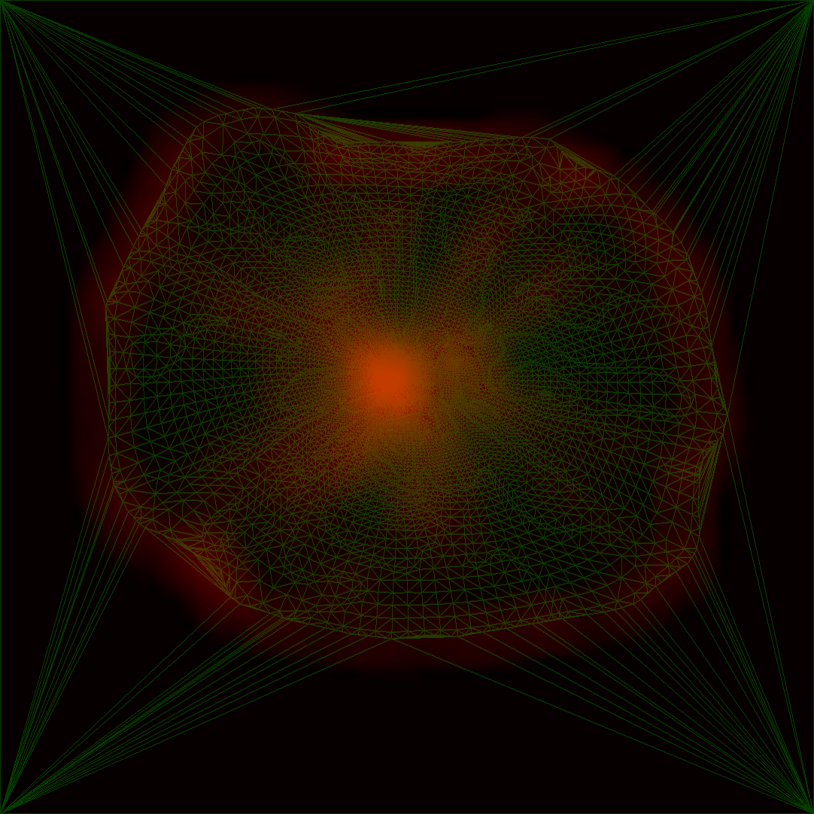
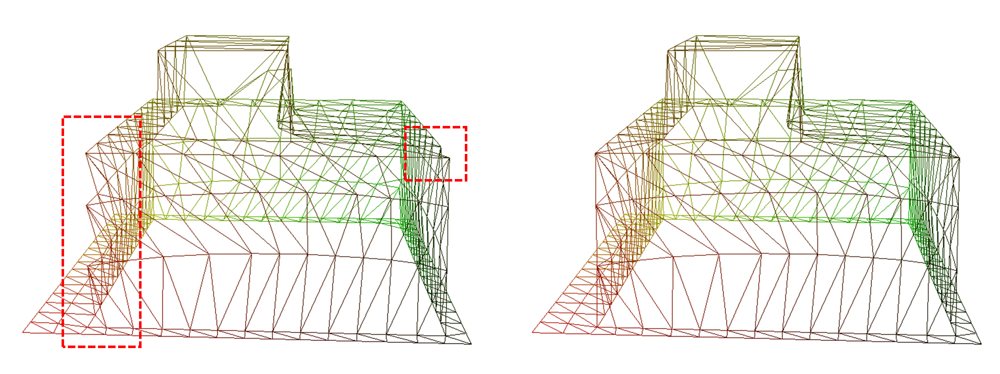

小结一下春节在家搞的玩具。
引言
本文相关代码，注意我用的optimal transport第三方实现因为license的问题，暂时没有以代码的形式放在里边儿，以后可能会换个别的实现包含进去。
所谓vector displacement map，就是把普通displacement map的每个元素给换成一个三维向量，使得被displace的表面不仅能向法线方向移动，也能在切平面上移动，就像这样：
 （上图来源于这里）
（上图来源于这里）
可以看到，只要VDM的分辨率足够高、作为其基底的uniform grid mesh足够精细，它就可以扭出任意我们想要的形状来（当然，拓扑不能变）。
我所面临的需求是使用很低精度的VDM，尽可能精确地表达出给定的形状。
相关工作
略。关键词如下，有兴趣可以去查已有的文献：
- Vector Displacement Map
- Regular Quadrilateral Mesh
- Geometry Images
Naive Solution
来看这个mesh：

首先给它自动生成一套UV。严格地说，是做个固定边界的mesh parameterization。这会给mesh的每个顶点赋予一个uv。我们把uv作为“位置”，把mesh在上绘制出来，会得到这样的效果：

现在想象一下把uniform grid覆盖在这个区域上，那么这张图就告诉了我们uniform grid上的每个顶点对应原始mesh的位置。将在uniform grid上的原始位置记作，那么对应的displacement vector就是：
至此，我们得到了一张能把uniform grid扭出mesh形状的vdm：

Grid Density Optimization
这张VDM似乎还不错，但经不起细看。原始mesh的上半部分在世界空间中的表面积较大，但在参数空间中的面积较小，这导致uniform grid中只有很少的顶点是用来描述这部分mesh的，进而其细节损失了不少；与此相对，mesh底座的平面部分没有任何细节，却有大量grid顶点聚集在上面，既浪费了vdm的存储，又浪费了gpu处理顶点的算力。
我们把grid精度降低到32x32，问题会更明显：

显然，grid的许多顶点被浪费在了无关紧要的地方，真正重要的形状特征却没采样到。这就是接下来需要解决的问题，我们将其划分为两个子问题：
- 如何确定mesh的哪些区域更加重要？
- 如何让grid在mesh的重要区域分布得更密集？
Vertex Importance
第一个问题比较简单，可以很容易地设计出成吨的启发式方案，比如计算原始mesh上的曲率、计算上述vdm拟合结果和原始mesh之间的差异等。我采用的方法如下：
记三角形的法线为；对非边界边，记包含的两个三角形为；对每个顶点，记与其相接的非边界边构成的集合为。那么顶点的重要度为：
说人话就是：与顶点相连的边对应的棱越是尖锐，此顶点就越是重要。
重要度计算无疑有更好的方案，但目前这个效果挺好，暂时就这样了。
Density Optimization
我们可以从以下两个思路出发来调整网格的密度：
- 调整mesh parameterization的结果，使得高重要度的顶点在参数空间分布得稀疏些。这在理论上是可行的，我之前仅仅是简单粗暴地使用了LSCM(least squares conformal maps)。然而我们需要在优化重要度分布的同时避免distortion，有点复杂，搁一边儿待考虑。
- 在参数空间把uniform grid的采样位置扭一扭，使之多采样重要度高的区域。这个实现起来要简单很多，有不少思路，比如把让重要顶点在参数空间吸引附近的grid顶点，然后把grid转换为弹簧模型求解。在这里，我采用的是另一个实现方法：
- 以每个顶点为中心，以其重要度为强度，随便选个kernel，把所有顶点splat到参数空间，得到一个importance field。
- 把importance field归一化成一个概率分布，在固定边界点的情况下计算均匀分布到它的optimal transport，得到一个bijective transport map，那么transport的目标位置就是uniform grid的采样位置。
方案2的optimal transport虽然也很难求解，但这是个标准问题，可以直接用第三方实现，不像方案1那样需要自己修改parameterization metric。 事实上，“用相对简单的方式做平面参数化，再在参数空间中进行调整”也是一种经典的参数化流程，其目的正是降低优化的难度。
来看看效果，第一步得到的importance field如下：

绿色的是mesh parameterization的结果，红色的是importance field。可以看到，石头和地面连接的部分因为变化比较锐利，形成了一圈高重要度区域；整个参数空间的正中间则对应mesh的上半部分，因顶点密集，同样形成了高重要度区域。
接下来跑个uniform distribution到importance distribution的optimal transport，就得到了对应的uniform grid扭法：

左边是transport map中grid顶点对应的位移，右边是按transport map调整grid采样位置后的结果。如我们所愿，重要度较高的区域现在有更高的grid密度。
最后，用新grid采样原始mesh，效果如下：

左边是原始版本，右边是新版本，棒极了。
PS：在把顶点重要度splat到参数空间前，可以给背景板赋予一个初始重要度。调整这个值，就能控制顶点在不重要区域的密度，就像这样：

Sharp Feature Alignment
在优化了grid density后，VDM表达形状的能力已经比初始版本强许多了，但它仍然对锐利的棱角无能为力。比如：

Mesh与底座相接的部分（红框中）接近于直角，在VDM中却表现得平滑了。事实上，即使我把这个VDM的分辨率翻两倍、翻四倍，问题也只是被缓解，无法根除。
显然，如果能微调grid的采样点位置，让其顶点正好落在mesh的角上，让其边正好落在mesh的棱上，就能精确地把mesh的棱角表达出来。我们把这些棱角统称为“sharp feature”，具体规定如下：
- 两个相邻三角形之间法线差异超过指定阈值时，将它们共享的边称为sharp edge。
- 与超过两条sharp edge相连的顶点被称为sharp corner。
在找到mesh中所有的sharp features后，就可以依照下述规则在参数空间微调grid的采样位置：
- Grid vertex离某个sharp corner很近时，把该grid vertex挪到corner在参数空间的位置上。
- Grid edge和某条sharp edge相交时，把grid edge上离交点近的那个grid vertex挪到交点处。
- 挪动前检查下会不会产生fold over，会的话别挪。
- 每个grid vertex至多被挪动一次。
来看看微调前后的效果对比：

完美！
再看来个极端点的，用16x16的VDM拟合下面的方盒子：

Grid density optimization和sharp feature alignment的效果都很明显
对角线方向
Grid由四边形构成，然而实际渲染时我们仍然需要把四边形都拆成三角形。此时，斜边的方向可能会受到sharp edge的影响。比如对四边形abcd，如果恰好有一条sharp edge穿过ac，那么我们就需要把abcd拆成abc，acd。
这意味着，每个quad都可能有自己的斜边方向，这对vdm的渲染是很不利的。如果想避免每个uniform grid都有自个儿的index buffer，就需要mesh shader之类的技术，在shader中根据vdm中额外记录的斜边方向信息动态生成三角形。

左边是全局统一斜边朝向的效果，右边是根据sharp edge情况调整了斜边朝向后的效果，难以忽视其间差异。
后话
有了如此高效的VDM，快扛起大旗，向每个人宣扬VDM的美好，让VDM的春风吹遍全世界吧！
什么，你问为什么不直接摆一个mesh在这？
嗯，好问题……